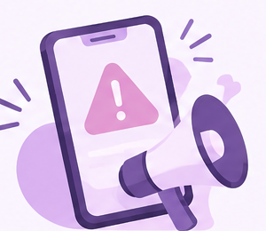
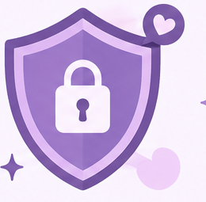
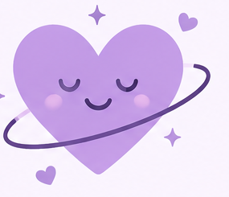
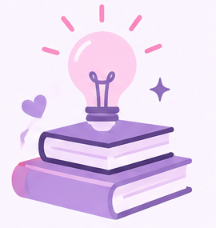
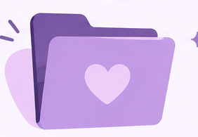

Block an account
Blocking can limit how an account contacts or interacts with you.
- Open the person's profile.
- Choose the menu (often shown as three dots).
- Select Block and follow the confirmation steps.
Recognize cyberbullying, find helpful steps and remember that you never have to face a difficult online situation alone.
Choose a space to explore. You can come back here anytime.

Use this private, on-device form to organize what happened. This demo does not send reports to a school, platform or support team.
If you feel unsafe or overwhelmed, consider speaking with a trusted adult. If someone is in immediate danger, contact local emergency services with an adult's help.

Small privacy steps can help you feel more in control of your online spaces.
Platform menus change over time. Look for the platform's current Help or Safety settings, and ask a trusted adult to help if you are unsure.
Blocking can limit how an account contacts or interacts with you.
Use the platform's report option when a post, message or account breaks its rules.
Choose settings that make you comfortable sharing online.
If it is safe to do so, keep a note of dates and relevant details.

Your feelings are valid. Take what helps, leave what doesn't, and reach out to someone you trust.
You deserve kindness, online and everywhere else.
A SafeSpace reminderStep away from the screen for a moment. Take a few comfortable, slow breaths and notice what is around you.
You could start with: “Something online has been bothering me. Can I talk to you about it?”
Someone else's hurtful words do not define your worth. You deserve respect and support.
Consider speaking with a parent or caregiver, teacher, school counselor or another trusted adult. If you feel in immediate danger, seek help from an adult and local emergency services.

Understanding cyberbullying can help you recognize it and choose a safer response.
Cyberbullying is bullying that happens through digital devices and online spaces. It can include repeated hurtful messages, humiliating posts, spreading rumors or deliberately excluding someone.
Notice patterns such as repeated insults, unwanted messages, public humiliation or threats.
Think about whether a message is respectful, necessary and okay to share. Ask permission before posting someone else's content.
Do not join in, like or forward harmful content. Check in privately with the person and tell a trusted adult.
If behavior continues, feels threatening or is difficult to manage, ask a trusted adult for support.

These records are stored only in this browser on this device.
Anyone with access to this browser profile may be able to see locally saved records. Do not use real names or sensitive personal details in this school demo.
A programmed support guide with helpful options. It is not a real AI, counselor or emergency service.
This assistant uses pre-written responses. It cannot understand every message or provide emergency help. Please involve a trusted adult for real-life support.
Your online world deserves a safe space.
SafeSpace is a student project designed to help teenagers recognize, prevent and respond to cyberbullying. It brings together practical safety tips, educational content, personal reflection and a programmed support assistant.
SafeSpace is an educational demonstration. It does not send reports, contact platforms, provide professional counseling or replace trusted adults and official support services.